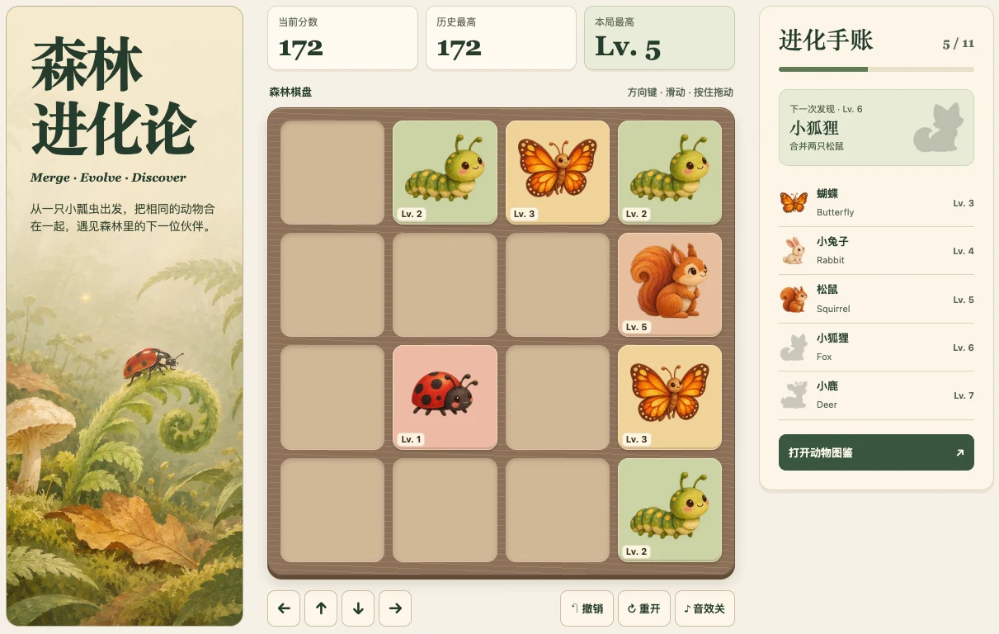

Interactive Game / Forest Evolution
森林进化论
一款以经典 2048 合并机制为基础的森林动物进化游戏。合并同级动物，从一只瓢虫出发，逐步解锁 11 种动物，最终遇见森林之王。

Gameplay
从一只瓢虫到森林之王。
每一步让棋盘上的动物一起移动。两只同级动物相遇就会进化。每次棋盘发生变化，就会在空格里出现一只低等级动物。森林手账提示下一项发现，图鉴记录历次解锁。合成戴叶冠的狮子后，可以继续挑战分数。
4 × 4棋盘
11动物等级
Art & Interaction
把棋盘做成一张森林手账。
奶油纸色、鼠尾草绿、木框和水粉质感动物构成游戏的视觉语言。低等级用简单轮廓辨认，高等级靠体型、尾巴、条纹和叶冠区分。合并让棋子滑入并轻弹，首次发现会亮起图鉴里的动物。
- ↗原创动物插画
- ↗剪影与图鉴解锁
- ↗狮子通关动画
Implementation
打开网页就能游玩。
- 方向键、鼠标或触屏输入
- 纯逻辑计算移动、合并和分数
- 播放动画并保存进度
JavaScript 模块将棋盘规则、动物配置和页面交互分开。LocalStorage 保存棋局、最高分、图鉴和音效设置。音效由 Web Audio 生成。
进入森林